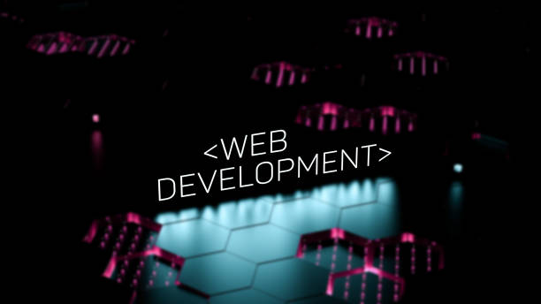

Publié le 20 mai 2025
J’ai toujours été fasciné par la technologie, mais c’est en créant mon premier site perso que j’ai su que je voulais aller plus loin. Le code est devenu une passion, un art de créer des choses utiles, belles et fonctionnelles à partir de rien.
Le développement web m’offre la liberté de construire mes propres outils, d’apprendre en permanence et de m’exprimer à travers des designs et des interfaces interactives. Aujourd’hui, je suis fièr de pouvoir allier technologie et créativité.
Retour au blog